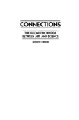
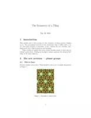

islamic art shelf
Andrew Sutton - Ruler & Compass.pdf
Art of the Islamic World A Resource for Educators - Maryam D. Ekhtiar, Claire Moore.pdf
Bourgoin Sources.pdf

Connections.djvu
Geometry of Design.pdf
George E. Martin (auth.) - Geometric Constructions.pdf
Hankin ASI.pdf
Islamic Design - A Mathematical Approach.pdf
Islamic geometric patterns, their historical development and traditional methods of construction.pdf
Rosette Analysis.pdf
Rosette Chapter.pdf
Star Patterns - AJ Lee.pdf

Symetries.pdf
Symmetries of Islamic Geometrical Patterns - Abas SJ, Salman AS, Moustafa A.pdf
The Analytic Art.djvu
Viewpoints.pdf


 - Geometric Constructions.webp "George E. Martin (auth.) - Geometric Constructions")